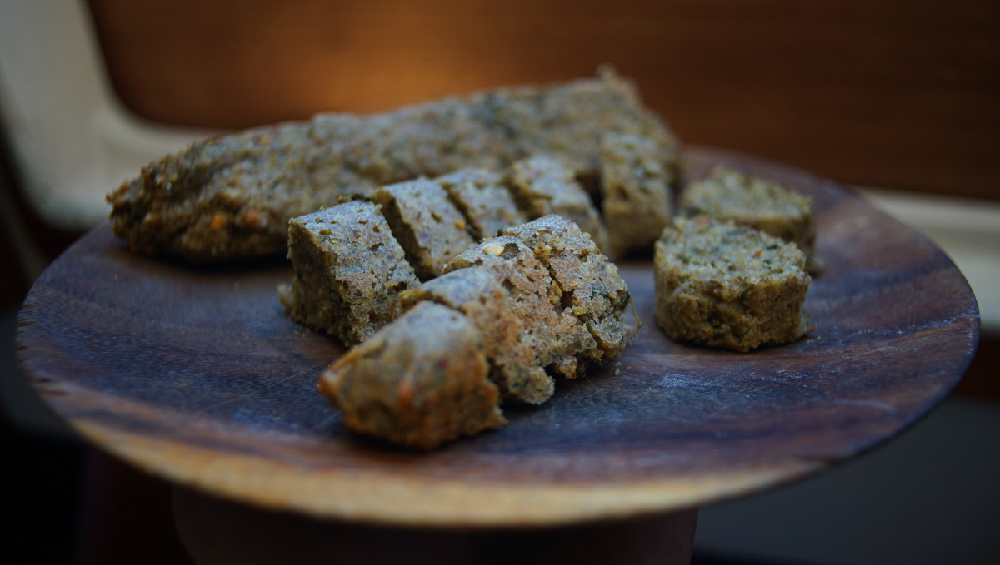
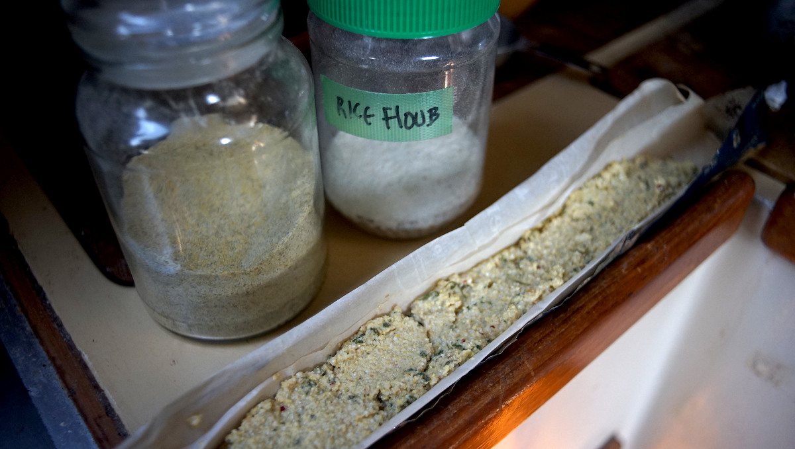

curried lentil rice loaf
1 small loaf — 60 minutes

This is a recipe we developed this summer to cook some of our favorite legumes and grains faster. Grinding brown lentils, chickpeas, buckwheat and rice into flour greatly reduces cooking time. We grind the flour in advance and keep them in jars. When we are ready to cook, we mix the chosen flour with water and add a variety of spices and fresh vegetables before cooking the mixture in our solar-oven. The result is a savory loaf which we cut into slices and throw on top of other meals to add bulk.
Since we have started grinding flour ahead of time, we have been consuming a lot more legumes. We are fairly active in the summer, so preparing this dish has helped keep us fuller, longer.
Grain Mill. We grind whole foods into flour ourselves with a hand-operated grain mill, milling small quantities so they don't turn rancid. Buckwheat, lentils and rice are very easy to grind at a fine setting, but wheat berries and chickpeas require two passes: the first is at a coarse setting, the second at a fine setting. Trying to mill chickpeas into a find grind from whole will make it very difficult to turn the mill handle.
{kind=link}
Solar-oven. Aboard Pino we use a solar-evacuated tube as an oven, which cooks a small amount of food very fast on a sunny day. If using other solar-cooking methods, it will take more time to prepare this recipe. It is possible to prepare all of our solar-cooked recipes in a regular oven. Although for this one, doubling the recipe might be necessary since the below ratios are optimized for a smaller cooker(the inside of the tube doesn't permit for large recipes, it feeds two people). Preheat oven to 180°C|350°F, oil up baking dish, pour in batter, and bake for 40 minutes or until slightly browned.
Fresh vegetables? We like to add fresh vegetables into the mix. We cut carrots, potatoes, or onions into really small cubes. We have added sprouted legumes and seeds(see sprouting), our usual mix includes brown lentils, fenugreek seeds, mung beans and radish seeds.
- rice flour40 g
- brown lentils70 g (dry, ground into flour)
- dried fenugreek leaves2.4 g
- curry powder1 g
- garlic powder1 g
- chili pepper flakes2 g
- water180 ml
- tahini15 g
batter
- In a bowl, mix 40 g (1/4 cup) of rice flour(ground rice, we alternate between short grain glutinous rice, or non-glutinous rice, brown and white), 70 g (1/2 cup) of lentil flour(ground brown lentils, we've prepared this recipe with chickpea flour too), 2.5 g (~1/4 cup) dried fenugreek leaves(kasoori methi), 1 g (1/2 tsp) curry powder, 1 g (1/2 tsp) garlic powder, and 2 g (1 tsp) chili pepper flakes. Mix well.
- Mix in 180 ml (3/4 cup) of water(or vegetable broth) gradually, stirring all the while. Do not add the water all at once, depending on how fine your flour is, or what kind of rice you are using, you may require more or less of it. The goal is to have a dough that is wet but that can still hold itself together(not too runny). Stir 15 g (1 tbsp) tahini into the wet mixture.
- We like to line the tray of the cooker with a strip of parchment paper so it doesn't stick, and then spoon the batter over it.

- We solar-cook the mixture for 40-60 minutes(depends how sunny it is). We flip the loaf horizontally in the tray about halfway through the cooking process. In the end, the loaf will smell fragrant, notes of fenugreek leaves will wander in from outside, and the edges and top of the loaf will have browned.
- Cut the loaf into slices and serve them on top of other dishes, we like to put them on top of rice bowls or pasta.